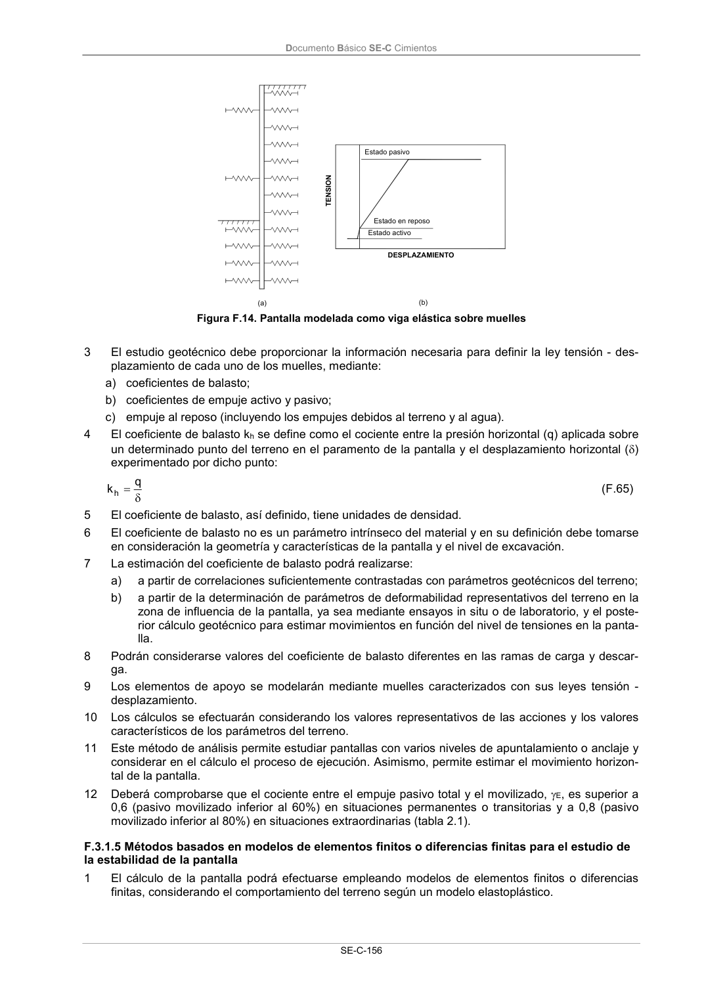

DB-SE-C · Página 161 · versión 2019-12-20
SHA256: a71133f4b0dca253e45ea3071c70f2a512354bcc5cd841bf89b1a502f567ac5e · página física 161 de 165 · métodos de encabezado
solo si están cotejados.
Documento · ← p. 160 · p. 162 →
Formatos: Markdown · JSON de bloques · PDF p. 161 · imagen PNG
Documento Básico SE-C Cimientos
SE-C-156
DESPLAZAMIENTO
TENSION
(a)
(b)
Estado pasivo
Estado en reposo
Estado activo
Figura F.14. Pantalla modelada como viga elástica sobre muelles
3
El estudio geotécnico debe proporcionar la información necesaria para definir la ley tensión - des-
plazamiento de cada uno de los muelles, mediante:
a) coeficientes de balasto;
b) coeficientes de empuje activo y pasivo;
c) empuje al reposo (incluyendo los empujes debidos al terreno y al agua).
4
El coeficiente de balasto kh se define como el cociente entre la presión horizontal (q) aplicada sobre
un determinado punto del terreno en el paramento de la pantalla y el desplazamiento horizontal ()
experimentado por dicho punto:
q
kh
(F.65)
5
El coeficiente de balasto, así definido, tiene unidades de densidad.
6
El coeficiente de balasto no es un parámetro intrínseco del material y en su definición debe tomarse
en consideración la geometría y características de la pantalla y el nivel de excavación.
7
La estimación del coeficiente de balasto podrá realizarse:
a)
a partir de correlaciones suficientemente contrastadas con parámetros geotécnicos del terreno;
b)
a partir de la determinación de parámetros de deformabilidad representativos del terreno en la
zona de influencia de la pantalla, ya sea mediante ensayos in situ o de laboratorio, y el poste-
rior cálculo geotécnico para estimar movimientos en función del nivel de tensiones en la panta-
lla.
8
Podrán considerarse valores del coeficiente de balasto diferentes en las ramas de carga y descar-
ga.
9
Los elementos de apoyo se modelarán mediante muelles caracterizados con sus leyes tensión -
desplazamiento.
10
Los cálculos se efectuarán considerando los valores representativos de las acciones y los valores
característicos de los parámetros del terreno.
11
Este método de análisis permite estudiar pantallas con varios niveles de apuntalamiento o anclaje y
considerar en el cálculo el proceso de ejecución. Asimismo, permite estimar el movimiento horizon-
tal de la pantalla.
12
Deberá comprobarse que el cociente entre el empuje pasivo total y el movilizado, E, es superior a
0,6 (pasivo movilizado inferior al 60%) en situaciones permanentes o transitorias y a 0,8 (pasivo
movilizado inferior al 80%) en situaciones extraordinarias (tabla 2.1).
F.3.1.5 Métodos basados en modelos de elementos finitos o diferencias finitas para el estudio de
la estabilidad de la pantalla
1
El cálculo de la pantalla podrá efectuarse empleando modelos de elementos finitos o diferencias
finitas, considerando el comportamiento del terreno según un modelo elastoplástico.
